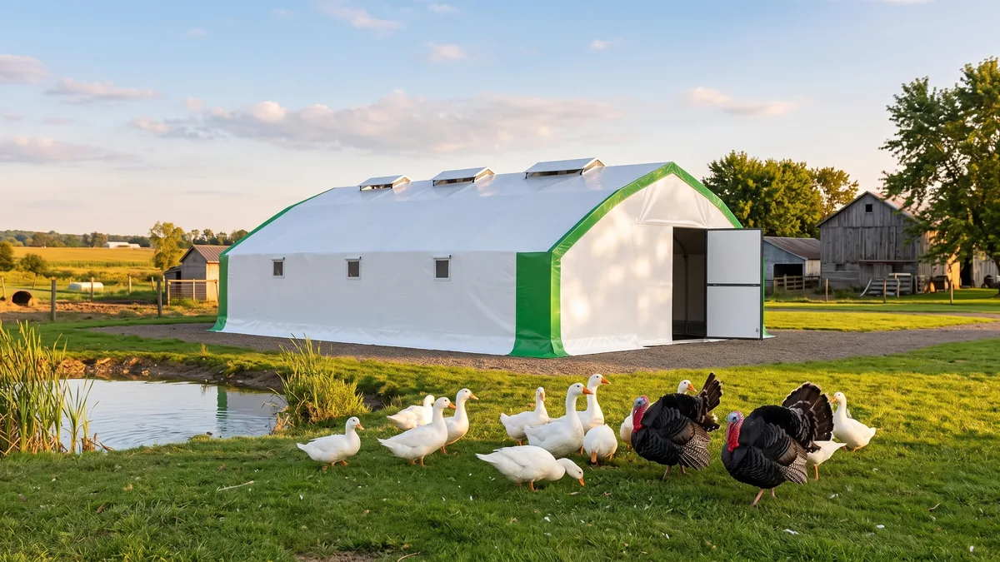

Çadır kümeste ördek, kaz ve hindi yetiştiriciliği
Ördek altlığı batırır, kaz mera ister, hindi yer ister ve kolay hastalanır. Üç türün de çadırda nasıl tutulacağını, drenajdan blackhead riskine kadar sahadan anlatıyorum.

Tavuk çadıra girer, otururuz. Peki ördek? Kaz? Hindi? Köye dönenin aklına önce tavuk gelir ama iki yıl sonra aynı adam "boş alan var, birkaç kaz da salsam mı" diye düşünmeye başlar. Salabilirsin, ama her kanatlıyı aynı barınağa aynı mantıkla koyarsan pişman olursun. Bu üç hayvanın huyu birbirinden dağlar kadar ayrı. Biri altlığını batırır, biri komşunu ayağa kaldırır, biri de yanlış arkadaşla bir araya gelince topluca gider. Gel bunları tek tek konuşalım; hangisi çadıra ne kadar uyar, neyi ister, nerede yakar.
Baştan söyleyeyim: çadır barınak üçüne de uygundur, hatta bazı yönleriyle betonarmeden iyidir. Ama "uygun" demek "aynı kurulum" demek değil. Ördeğe drenaj, kaza mera, hindiye hacim ve ayrı sürü ayarlaman gerekir. Farkları görmezden gelirsen çadırın suçu değil, kurgunun suçu.
Ördek yetiştiriciliği: su sever, altlığı batırır
Ördekle ilgili bilmen gereken tek şey suyla olan ilişkisidir; gerisi ondan türer. Ördek suluğa gagasını daldırıp başını sallar, suyu etrafa savurur; bir de üşenmeyip her fırsatta içine girmeye çalışır. Sonuç? Suluk çevresi çamura döner, altlık cıvır, kümes içi bataklığa döner. Tavukta "altlık nemli" dediğin şey ördekte "altlık göl" olur.
Çözüm suyu kesmek değil, suyu yönetmek. Suluğu delikli ızgara/plastik pas üzerine, altına damlama tepsisi koyacak şekilde kur; savurduğu su altlığa değil, kanalla dışarı gitsin. Barınağın suluk tarafına hafif eğim ver, dışarıya doğru bir drenaj hattı aç. Ördekte altlık yönetimi tavuğa göre iki kat sık iş ister; ıslanan noktayı beklemeden alıp kuru saman/talaş basacaksın. Yüzme havuzu şart değildir; içme ve gagasını temizleyecek kadar su yeter, ama küçük bir gezinti havuzu verirsen tüy kalitesi ve yumurta temizliği belirgin artar.
İyi haber: ördek soğuğa tavuktan dayanıklıdır, yağ tabakası ve sık tüyü onu korur. Kışın donmuş suluk dışında pek derdi olmaz. Havalandırmayı yine de gevşetme; bu kadar nem üreten bir hayvanda hava akışı olmazsa çadırın içi yoğuşur. Doğru kurulmuş havalandırma ördekte lükstü değil, altlığı kuru tutmanın yarısıdır. Yem konusunda ördek tavuğa yakındır ama biraz daha çok yer; niasin ihtiyacı yüksektir, eksikliğinde yavru ördekte bacak zayıflığı görürsün.
Kaz besiciliği: otçul, meracı ve gürültücü bekçi
Kaz bambaşka bir alem. En büyük özelliği otçul olması: iyi bir merada kaz, gıdasının yarısından çoğunu otdan karşılar. Bu, yem masrafını yerlerde tutar. Kazı çadıra hapsedip yem torbasıyla büyütmeye kalkarsan hem paranı yakar hem hayvan huysuzlanır. Kaz için asıl kurgu şudur: geceleri ve kötü havada barınak olarak çadır, gündüz otlayacağı çitli bir mera.
Yani kaz aslında yarı gezen bir sistemdir. Gezen sistem kurma mantığını kaza uyarlarsan tam oturur: barınaktan çıkıp otlayacağı, akşam geri gireceği bir düzen. Meranın çiti alçak olmasın, tilki-sansar kazın yavrusuna da bayılır; yırtıcı güvenliğini hafife alma.
Kaz iriyarıdır, metrekareye az hayvan girer; barınakta tavuğun üç-dört katı yer kaplar. Ama gündüzü dışarıda geçirdiği için kapalı alan ihtiyacı sandığın kadar büyümez. Folluk konusunda rahatsın: kaz mevsimlik yumurtlar, ilkbaharda yoğun, sonra keser; yumurtası iri ve değerlidir ama sürekli yumurta beklentisiyle kaza girme. Kaz uzun ömürlüdür, damızlık bir kaz on yılı bulur; sürüyü her yıl baştan kurmazsın, bu da onu tavuğa göre daha az uğraştıran bir yatırım yapar. Bir de kazın çayırı biçme derdini azalttığını unutma; ağaç altını, bahçe kenarını temiz tutar, adeta canlı çim biçme makinesidir.
Hindi yetiştirme: yer ister, protein ister, kolay hastalanır
Hindi bu üçlünün en nazlısı. Yavru hindi (palaz) ilk haftalarda inanılmaz hassastır; ısıya, neme, strese tavuktan çok daha duyarlıdır. İlk günlerde yemi bulmakta bile zorlanır, kimi üretici yemin üstüne renkli boncuk atıp ilgisini çeker. Bu dönemi atlatan hindi sonra sağlamlaşır ama başlangıç zahmetlidir. Palaz büyütmenin temel mantığı için civciv büyütme rehberindeki ana makinesi kurulumu iyi bir başlangıç, ama hindide sıcaklığı bir-iki derece daha yukarıda tut.
Hindi yer ister. İriliği ortada; erkek hindi 10-15 kiloya çıkar. Metrekareye az hayvan koyarsın, tünek ve gezinti alanı bol olmalı. Çadırın yüksek çatısı ve geniş hacmi tam da burada işe yarar; hindi alçak, havasız yerde strese girer, tüy yolar. Yem tarafında protein iştahı yüksektir: palaz yeminde %26-28 ham protein ararsın, tavuk yemiyle hindi büyütmeye kalkarsan gelişme geri kalır. Bu yüksek protein ihtiyacını bilmeden tavuk yemi verip "hindim büyümüyor" diyen çok.
Karışık sürü: hindi ile tavuğu neden aynı yere koymamalı?
İşte en kritik başlık. Hindi yetiştirmeyi düşünüyorsan şunu tabelaya yaz: hindiyle tavuğu aynı barınakta, aynı merada tutma. Sebebi blackhead denen hastalıktır (histomoniyaz). Bu, tavuğun taşıyıp çoğu zaman hastalanmadan gezdirdiği ama hindiye bulaşınca öldüren bir parazittir. Solucanlar ve toprak yoluyla geçer; tavuğun gezdiği zeminde hindi otlatırsan riski davet edersin. Tek başına iyi giden bir hindi sürüsü, araya birkaç tavuk karıştığında topluca gidebilir.
Bu yüzden hindi ayrı barınak, ayrı mera, mümkünse ayrı ekipman ister. Çadır sisteminin modülerliği burada avantaj: iki ayrı çadırı yan yana kurar, birine hindiyi, ötekine tavuğu koyar, aralarına mesafe ve ayrı gezinti alanı bırakırsın. Genel sürü sağlığı ve hastalık-aşı takvimi mantığını her tür için ayrı tutmak, karışık sürüde iki katı önemli. Ördek ve kaz blackhead'e hindi kadar duyarlı değildir ama onları da hindiyle aynı ıslak zeminde toplamak koku ve parazit yükünü artırır.
Tür, alan ve özellik tablosu
Aşağıdaki tablo üç türü yan yana koyar; rakamlar ortalama, iklime ve ırka göre oynar. Barınak m² değerleri kapalı alan içindir, mera ayrıca hesaplanır.
| Özellik | Ördek | Kaz | Hindi |
|---|---|---|---|
| Barınakta m²ye hayvan | 3-4 adet | 1-2 adet | 2-3 adet |
| Beslenme tarzı | Yem + su bitkileri | Otçul, meracı | Yüksek proteinli yem |
| Palaz/civciv yemi ham protein | %18-20 | %18-20 | %26-28 |
| Su ihtiyacı | Çok yüksek | Yüksek | Orta |
| Altlık ıslatma | Çok fazla | Fazla | Orta |
| Soğuk dayanımı | Çok iyi | Çok iyi | Palazken zayıf, sonra iyi |
| Gürültü / komşu | Orta | Yüksek (bekçi) | Orta |
| Öne çıkan risk | Islak altlık, drenaj | Mera ve çit şart | Blackhead, tavukla karışmaz |
Tablodan çıkan özet basit: ördekte drenajı, kazda merayı, hindide alanı ve ayrı sürüyü çözersen üçü de çadırda mutlu olur.
Çadır neden bu üç tür için de mantıklı?
Ördeğin nemi, kazın irisi, hindinin alan ihtiyacı; üçünün ortak paydası hacim ve temizlenebilirlik. Alçak tavanlı betonarme, ördeğin ürettiği nemi tutar, hindinin strese girmesine yol açar, sürü değişince çatlaklarına sinen etkeni barındırır. Çadırın yüksek çatısı geniş bir hava yastığı yaratır, doğal baca çekişiyle nemi yukarı atar; iç yüzeyi silinip dezenfekte edildiği için hindiden ördeğe geçerken temiz sayfa açarsın. Betonla rakamlı kıyas istersen kümes maliyeti karşılaştırmasına bakabilirsin.
Bir de esneklik var. Bugün 20 ördekle başlar, yarın ikinci çadırı kurup hindiyi ayırırsın; betona gömülmediğin için sürü kompozisyonunu değiştirmek kolay. Bizim Tavuk Çadırı (üretim: DEHA Çadır) 3-4 kat yalıtımlı, TSE damgalı brandayla üretildiği için kışın ördek ve kazın suyunu, hindinin palazını üşütmeden geçirir; 81 ilde anahtar teslim kurar, sen sadece drenajı ve merayı ayarlarsın.

750 Tavukluk Tavuk Çadırı
Ördek, kaz ya da hindiyle küçük başlayıp deneyerek büyümek isteyene 750'lik Tavuk Çadırı tam ölçek: ördeğin nemini doğal çekişle atan yüksek hacim, kazın kış barınağı olacak 3-4 kat yalıtımlı TSE damgalı branda, hindiyi tavuktan ayrı tutmak için ikinci modül olarak da kurulabilen esnek yapı ve 81 ilde günler içinde anahtar teslim kurulum.
Başlamadan aklında kalsın
Bu üç türe hevesleniyorsan tek bir kuralı asla unutma: her birini kendi huyuna göre kur, birini ötekine benzetme. Ördeğe önce drenaj hattını aç, sonra hayvanı al. Kaza barınaktan çok mera ve sağlam çit ayarla. Hindiyi ilk günden tavuktan uzağa, ayrı zemine yerleştir; blackhead'i tedavi etmeye çalışmaktansa bulaştırmamak on kat kolay. Ve hepsinde küçük başla; 15-20 hayvanla bir mevsim geçir, defterini tut, hangi türün senin sahana, iklimine ve komşuna uyduğunu hayvan sana kendisi gösterir. Ondan sonra büyütmek zaten kolay.
Sık sorulanlar
Ördek yetiştiriciliği çadır kümeste olur mu?
Kaz besiciliğinde yem masrafı neden düşük?
Hindi ile tavuk aynı kümeste beslenir mi?
Hindi yeminde ne kadar protein olmalı?
Ördek, kaz ve hindi kışa dayanıklı mı?
Bir metrekareye kaç kaz veya hindi konur?
Projenizi birlikte planlayalım
Kapasitenizi ve bölgenizi yazın; ölçü ve teklifi birlikte çıkaralım.
Kapasitenizi yazın